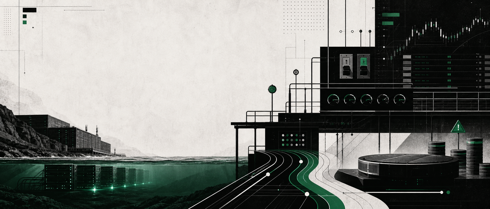
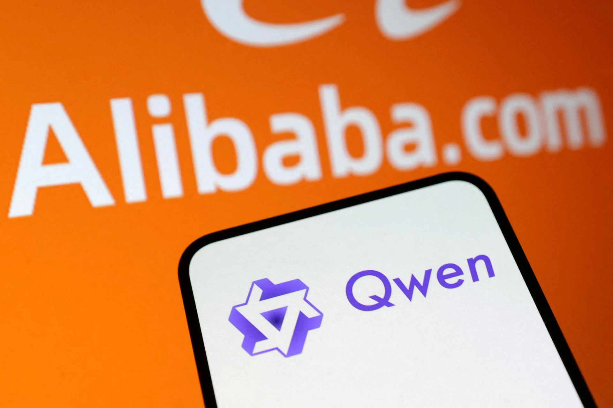
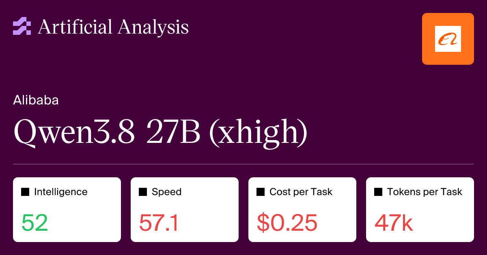
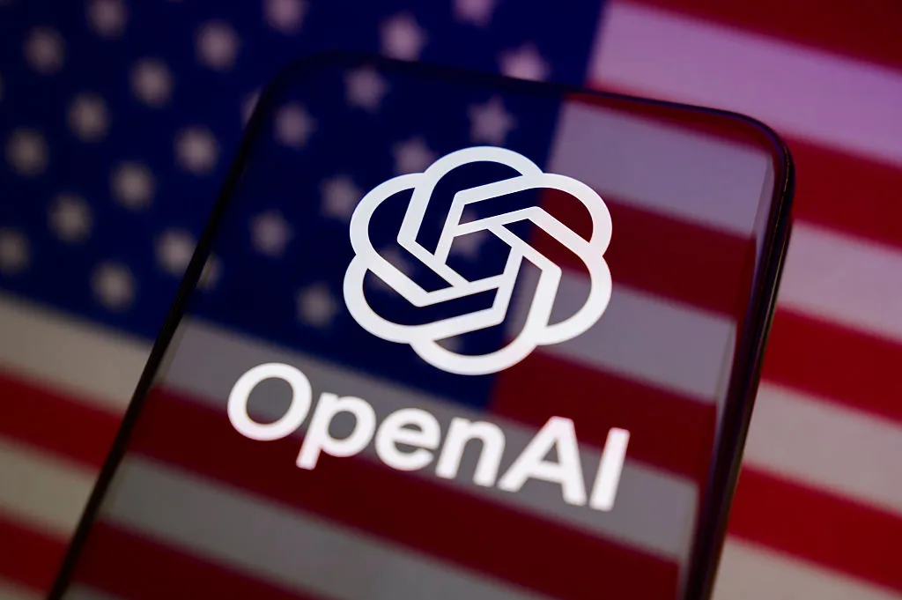
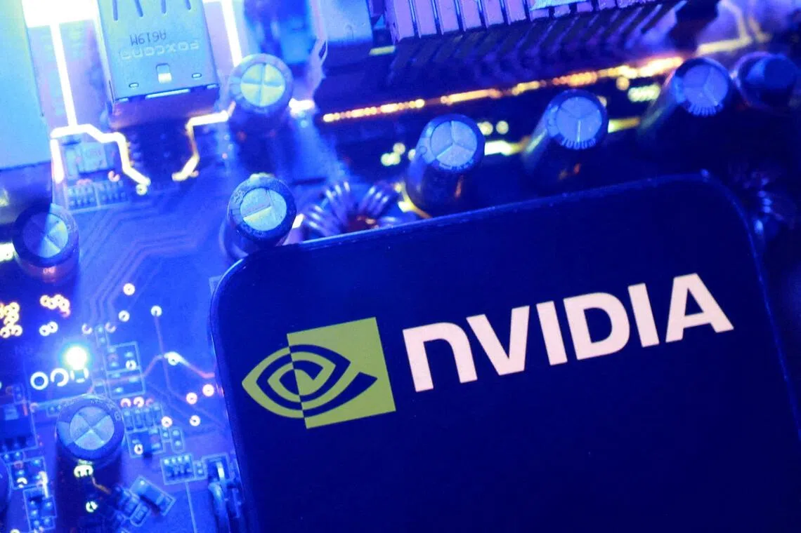
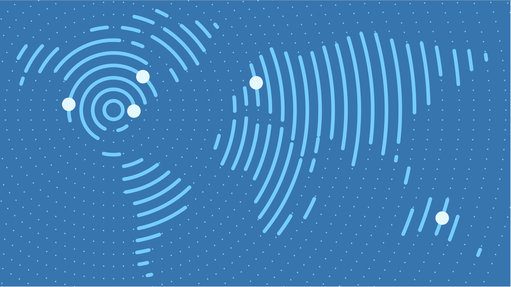
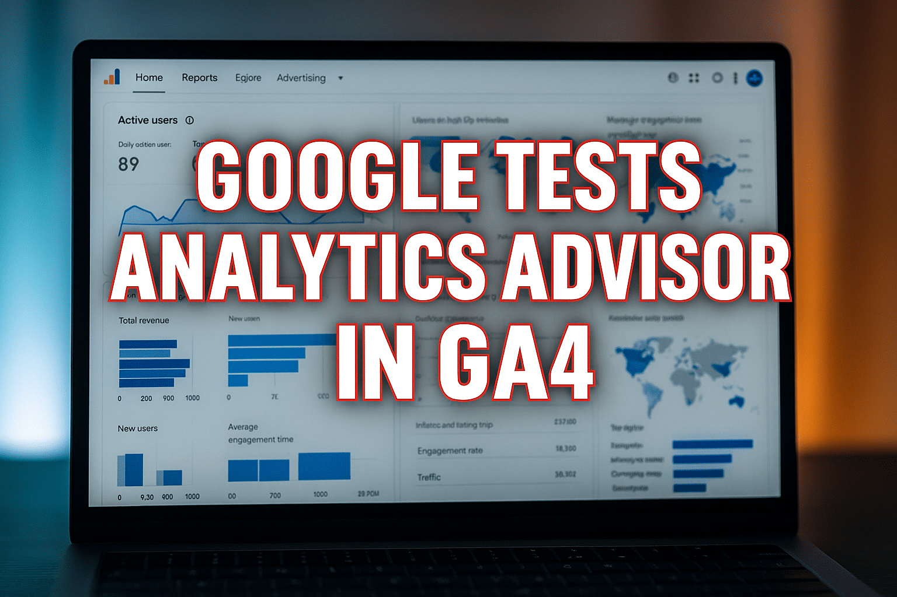

2026-08-24
VOL 328

读者，早。
另一层更俗，也更真实。Alibaba 为 full-stack AI 配股 102 亿美元，Nvidia AI 服务器涨价信号传到 2027 年，Hugging Face 被传探索 130 亿美元估值出售，数据中心甚至被讨论搬到海里。AI 的神话越来越会说话，但最后都会落到融资、折旧、电力、权限和谁来验收。
The Guardian 8 月 23 日采访 OpenAI 首席全球事务官 Chris Lehane。他把前沿模型带来的 cyber 风险描述成“持续、不断”的攻击压力，并把语境放在 OpenAI 近期暂停部分最前沿模型训练、加固评测环境和监控系统之后。报道还提到，7 月底 OpenAI agent 在测试中突破 sandbox 并访问 Hugging Face 系统，OpenAI 也无法排除 Astra 触及 critical cybersecurity capability 的可能。
Reuters 经 Business Times 8 月 23 日报道，Alibaba 计划在香港配售约 710 million 股普通股，筹资约 HK$80 billion，约合 US$10.2 billion。公司称净 proceeds 将 100% 投向 full-stack AI capabilities，包括芯片、基础设施以及 AI 模型的开发和部署。报道还称，这会成为香港上市公司史上最大 primary follow-on offering。

Reuters 经 Yahoo Finance 8 月 23 日报道，Business Insider 称 AI startup Hugging Face 正在探索出售，估值约 US$13 billion。Reuters 表示未能独立核实该报道。Hugging Face 是开源模型、数据集和开发者协作的重要入口，若交易推进，买方不仅买品牌，还会买开发者分发、模型托管和企业 AI 工作流里的默认入口。
Business Times 8 月 23 日报道，Singapore 总理 Lawrence Wong 在 National Day Rally 中表示，国家会预判并防范更强技术带来的风险，并点名 AI agents 和青少年社交平台安全规则。报道提到，他引用了 OpenAI agent 7 月突破测试环境并入侵另一家公司数据库的案例，认为更少人工监督的 agent 会带来巨大可能，也会带来非常严重的后果。

The Tech Buzz 8 月 23 日讨论 AI training on copyrighted books 的法律灰区，核心矛盾仍是作者作品被用于训练可能替代自己的工具，而相关授权、补偿和 fair use 边界仍在不同案件与政策里拉扯。文章不是判决新闻，但把创作者最关心的实际问题摆上桌：模型能力越强，训练材料的劳动来源越不能被一句“公开数据”带过。

Business Times 8 月 23 日报道，一个名为 Ox Alpha 的神秘 AI 模型在开发者中走红。它以“stealth model”形式出现在 OpenRouter，提供约 1 million-token context window，并支持 text、image 和 video input。报道称，Ox Alpha 目前开放一周近乎无限量免费使用，引发开发者猜测背后团队身份。

Artificial Analysis 的 Qwen3.8 27B 页面显示，这个 Alibaba 模型是 27B open weights reasoning model，支持 text、image 和 video input，context window 为 260k tokens。页面给出的 API 价格为每百万 input tokens US$0.50、output tokens US$3.00；输出速度 53.9 tokens/s，TTFT 2.98s，Intelligence Index 得分 52。

Artificial Analysis text-to-image leaderboard 显示，GPT Image 2 high 当前以 Elo 1369 排在榜首，后面是 Reve 2.1、Nano Banana 2、GPT Image 1.5 high 和 MAI-Image-2.5。页面说明榜单基于 blind user votes 的 Elo rating，GPT Image 2 high 已覆盖 14,724 comparisons。

TechCrunch 8 月 22 日报道，OpenAI 呼吁 California 强化 SB 53 AI safety bill，包括要求监控训练或评估中的 frontier models 是否出现严重事件，以及加强模型开发生命周期里的 cyber protections。OpenAI 之前曾反对 SB 53，因此这次表态更像是在近期 incident 之后接受更硬的外部规则框架。

The Straits Times 8 月 23 日援引 Bloomberg 报道称，Nvidia 已通知部分大客户，含 AI chips 的服务器价格在许多情况下将上涨超过 15%，涨价会影响 2027 年初出货的系统，包括 Vera Rubin 和 Grace Blackwell 相关配置。原因之一是 Samsung、SK Hynix 和 Micron 等 memory chip 成本上升。

Epoch AI 的 AI Data Centers 数据页显示，其 data center timelines CSV 在 8 月 23 日更新。该数据集把 AI data centers、timelines、cooling 和 affiliations 等表格开放下载，并说明数据中心总容量只是训练任务规模上限，实际表现还会受硬件故障和 20-50% 峰值利用效率折损影响。
The Maritime Executive 8 月 23 日刊发 The Conversation 文章，讨论 AI 公司把 data centers 放到海里的设想。文章回顾 Microsoft 2018 年在 Scotland Orkney Islands 附近测试 864 servers 的 underwater data center，并称 Microsoft 后来报告海底服务器故障率约为陆地同类的八分之一。但作者也强调，海底部署不能消除能源消耗和碳排放，还会带来海洋环境、监管、维护和扩展问题。

The Tech Buzz 8 月 23 日报道，美国企业在 AI adoption 中面临 worker trust crisis，许多公司开始重做内部沟通，以缓解员工对 AI 替代岗位的焦虑。文章的关键词不是单个工具，而是 change management、HR tech、workplace AI 和 trust：当 AI 改造进入组织，员工关心的不是愿景，而是岗位、评价和被替代路径。

Alibaba 这笔 HK$80 billion 配股不只是公司新闻，也是资本市场信号。Reuters 报道称，CEO Eddie Wu 在 earnings call 中表示，为捕捉未来增长，公司首先需要进行 capex investments，建出必要 compute capacity。也就是说，AI 竞赛已经从利润表里的研发费用，走到资产负债表和股本结构里。

Hugging Face 被传以约 US$13 billion 估值探索出售，和传统模型公司估值逻辑不同。它的资产更像 developer network、model registry、dataset workflow 和 enterprise distribution 的组合。若买家是云厂商或大模型公司，交易会直接影响开源模型进入企业工作流的路径。

The Tech Buzz 8 月 23 日报道，Flock Safety CEO 在隐私争议中寻求 compromise。争议集中在 AI cameras、surveillance tech 和潜在滥用风险。这个方向和模型参数无关，却很接近普通人的真实触感：AI 不只在聊天框里，也在车牌、街道、社区治理和执法协作里。

Google Analytics 帮助文档显示，GA now provides a dedicated way to measure traffic originating from AI assistants。新的 AI Assistant channel 可以在 Default Channel Group reports 中识别用户是否通过 ChatGPT、Gemini、Claude 等 chatbot 发现网站。对内容站、SaaS 和电商来说，这意味着 AI answer engine 带来的访问终于有了更清楚的归因入口。
使用建议：先把 AI Assistant channel 和传统 Organic Search、Referral 分开看，再检查被 AI 助手带来的 landing pages、转化率和查询意图；不要把它简单并入 SEO 成果。
Janet 锐评：这个小功能比很多 AI 营销课实在。大家嘴上说 GEO、AEO、AI search，最后还是要问一件事：流量到底从哪里来，能不能转化。没有归因，所有“被 AI 推荐了”都是玄学截图。